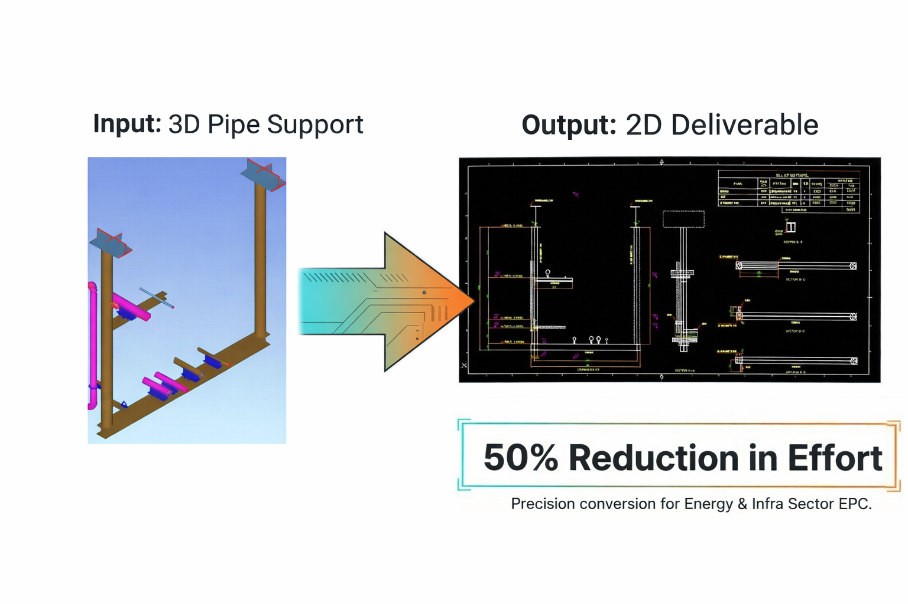

From Legacy Manual Drafting to AI‑Driven Generation
Engineers manually identify EIT supports using screenshots, visual inspection, and manual drafting in CAD tools — one by one.
Strong dependency on experienced designers diverted to low‑value tasks, creating bottlenecks dictated by human headcount.
Dependency on complex software chains (Tekla / SP3D / E3D) with high risk of missed or inconsistent supports and lost traceability.
Any upstream model change forces a manual restart of the entire drafting process from scratch, causing rework and delays.
Drawings produced at the speed of computing, reducing schedule without linear increases in staffing.
Significant reduction in manual extraction effort and engineering hours across projects.
Automated extraction removes human variance by enforcing consistent logic‑driven outputs.
Engineers redirected to high‑value tasks — optimization and design intent rather than tedious geometry extraction.
Directly reads 3D coordination models, electrical, instrumentation, and telecom model data without intermediate exports.
Automatically scans the model, classifies supports by type, discipline, and configuration, then generates standardized drawings.
First drawing matches the model exactly — EIT support drawings (DWG/PDF), support schedules, and structured data for fabrication.
A structured, low‑risk path from evaluation to full‑scale deployment
Evaluate current EIT workflows, identify pain points, and define success metrics
Run a focused proof‑of‑concept on a sample project module to validate results
Roll out across full project scope with team training and system integration
Expand to additional projects, disciplines, and multi‑site deployments
Automated 2D GA Extraction — From Model to Production‑Ready Drawings in Minutes
Manual conversion from Plant 3D to 2D GA requires extensive man‑hours with time‑intensive quality sanitization and manual formatting.
Output varies across drawings and projects due to dependency on individual draftsmen skill levels and manual standards application.
Heavy reliance on experienced draftsmen to manually apply layers, annotations, tagging, and drawing standards for each deliverable.
Every model revision triggers complete manual rework with no automated traceability between model and 2D deliverables.
Up to 70% faster with standardized templates, auto tagging, and built‑in quality assurance.
Elimination of manual drafting resources and rework cycles leads to significant cost savings.
True pipe routing, elevations, orientations, and component placement with zero discrepancies.
No model export needed. Reads piping data natively, preserving full geometry, coordinates, and attributes.
Layers, line types, annotation rules, tagging, and scaling applied automatically for issue‑ready output every time.
Auto‑generates GA drawings with tagging, layers, annotations, and built‑in quality checks. Easy revisions included.
When the 3D model changes, drawings regenerate automatically with full traceability — eliminating manual rework.
A structured, low‑risk path from evaluation to full‑scale deployment
Evaluate current drawing man‑hours, identify bottlenecks, and define automation goals
Run AI extraction on a sample piping module to benchmark speed and accuracy
Implement across all piping deliverables with team training and Plant 3D integration
Expand to additional disciplines, projects, and multi‑site deployments

Click here to provide your business email
Enter your business email to unlock the full video demo.